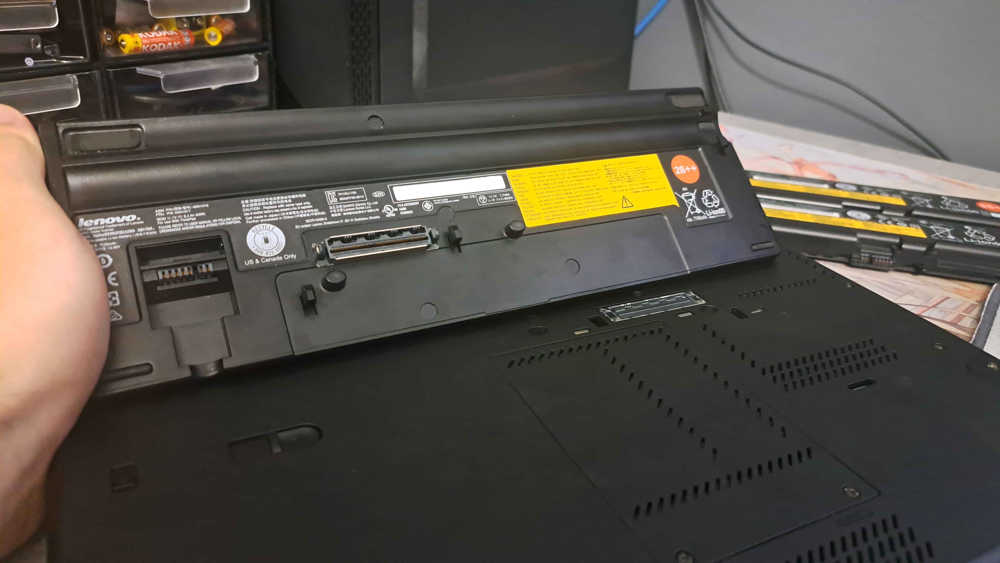

ThinkPad T430 is an amazing laptop known for it's durability, upgradability and compatibility with Linux. I'll discuss here upgrades which I have done.
I wanted easier way to charge my laptop, and now I only have to take only one charger for all my devices.
Required componets:
Based on this table from wiki, we need to choose resistor with resistance depends on device power rate. In case of T430 we have 65W, so 10kΩ resistor.
| power rating | resistance |
|---|---|
| 65 W | 10 kΩ |
| 90 W | not connected |
| 135 W | 0 Ω |
| 170 W | 1.5 kΩ |
Black wires to -
Red wires to +
Blue/Green like wire to ground through 10kΩ resistor.
Now we have to put it in some sort of a case. I 3D printed this, thanks to this guy I didn't had to create my own model, and usb-c pcb fits perfectly inside.
One issue you can encounter is length of a usb-c can intersect with fan... I solved this problem by rubbing the corner of the PCB with a nail file.
Final result looks like this:


It's kinda like stickers, but better, you can engrave anything you want with high detail. There is one con... this mod is permanent, so if you change your mind you are screwed.
Anyway process is simple, but not everyone have access to tools that I used (laser cutter), so if you do then let's start!
Before trying it on your machine I recommend to test laser on similar surface to adjust it's power properly and not damage laptop!
Results:


You can also replace keyboard for the one with the backlight!
I've also decided to buy US-JP layout, because for me it looks really cool. I catched this one on ebay:

In terms of battery life there is no better choice than a slice battery! It improves battery life DRASTICALLY.
I went from around 5-6h to 14-16h (for my usecase: neovim, browser - nothing fancy):
Slice Battery:

Regular&Slice Battery Info


Combined:

Thanks for reading, don't be scared to mess with your thinkpad ;)